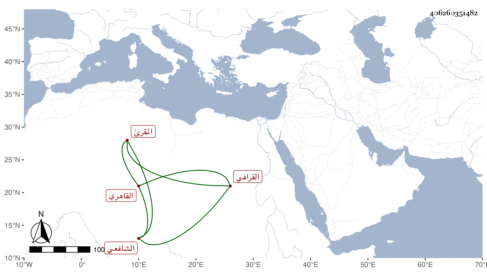

0902Sakhawi.DawLamic.ITO20230111-ara1.EIS1600.406260351482
Biography ID: 406260351482
580
محمد بن علي بن موسى أمين الدين بن النور القرافي القاهري الشافعي المقرئ الماضي أبوه . نشأ فحفظ القرآن والشاطبية والمنهاج وألفية النحو وكتابا في الأصول وغيرها واشتغل بالعلم وأخذ القراآت عن أبيه وانتهى في سنة ثمان وعشرين وأذن له وأشهد عليه جماعة وتصدى لنشرها فأخذها عنه جماعة واستقر في تدريسها بالمؤيدية عقب الشهاب بن يحيى وبالشيخونية عقب التاج ابن تمرية ، وكان بارعا فيها وجيها متأنقا في هيئته وملبسه حسن العشرة . مات في تاسع عشر ذي الحجة سنة ست وخمسين رحمه الله .
